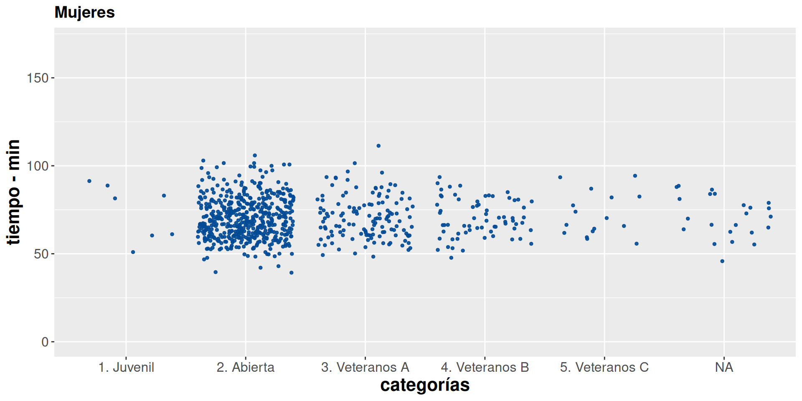

Indicadores de posición
Métodos y Simulación Estadística
Indicadores estadísticos
Cuando nos subimos a un auto observamos un tablero con muchos indicadores que permiten al conductor validar el estado del vehículo. El nivel de combustible, la temperatura, el estado de la batería, si alguna puerta esta abierta, la velocidad a la que se viaja, indicadores de las luces estacionarias, de giro, entre otros, permitiéndonos tomar decisiones en cada momento. Todos estos indicadores son construidos con información que se sintetiza de diferentes maneras.

Al igual que la situación anterior cuando nos enfrentamos a una análisis de datos, requerimos resumirlos en indicadores, tablas y gráficos que nos permitan un fácil análisis de ellos.
Por ejemplo para los datos cuantitativos se pueden utilizar tablas de frecuencia para identificando el valor con mayor frecuencia (más repetido), indicador que se denomina MODA.
Para las variable cuantitativas existen una serie de indicadores que caracterizan y facilitan su análisis como son :
- Indicadores de posición
- Indicadores de centro
- Indicadores de dispersión o variabilidad
- Indicadores de forma
Los indicadores de posición permiten identificar la posición relativa de un valor con respecto al grupo. Para entender el concepto se utiliza información correspondiente a una carrera de 10 kilómetros.

Tomada de : pixabay.com
En octubre de 2022 se corrió la carrera de la Luz, contando con 1922 participantes en 10 categorías por edad y sexo. ( Juvenil, Abierta, Veteranos A, Veteranos B y Veteranos C para hombre y mujeres).
El siguiente gráfico de puntos representa los tiempos alcanzados por los participantes por categoría y sexo empleados para recorrer los 10 kilómetros de la competencia.
paleta6=c("#447270", "#6B9493", "#F6E271", "#F6B916", "#F69312", "#BC6C25")
p1=ggplot(CarreraLuz22F, aes(y=timerun/60, x=categoria))+
geom_jitter(color="#034A94", size=1, alpha=0.9) +
aes(color=paleta6)+
labs(title = "Mujeres",
y= "tiempo - min",
x= "categorías")+
#facet_wrap(~ sex)
#facet_grid(vars(sex), scale="free")+
ylim(0,170)+
Theme1
p1
library(paqueteMETODOS)
data("CarreraLu22M")
paleta6=c("#447270", "#6B9493", "#F6E271", "#F6B916", "#F69312", "#BC6C25")
p2=ggplot(CarreraLuz22M, aes(y=timerun/60, x=categoria))+
geom_jitter(color="#034A94", size=1, alpha=0.9) +
aes(color=paleta6)+
labs(title = "Hombres",
y= "tiempo - min",
x= "categorías")+
#facet_wrap(~ sex)
#facet_grid(vars(sex), scale="free")+
ylim(0,170)+
Theme1
p2Fuente :juanchocorrelon
Para un participante que llega a la meta es interesante poder comparar el resultado obtenido con respecto al grupo. La respuesta está en los indicadores de posición.
Percentiles
Los percentiles corresponden a 99 valores que dividen los datos en cien partes de igual porcentaje (\(P_1\), \(P_2\), \(P_3\), \(P_4\), \(\dots\), \(P_{99}\)), cada una de las cuales contiene un 1% de los datos.
Ejemplo
Para ilustrar el concepto, pensemos en que participamos de una carrera. El percentil dará cuenta de mi posición dentro del grupo.
Ahora supongamos que dos corredores que se llamarán
María y Carlos participaron en la carrera.
María ocupó un lugar correspondiente al percentil 40 (\(P_{40}\)) y Carlos ocupó el
puesto que corresponde al percentil 30 (\(P_{30}\)). Podríamos afirmar que a Carlos
obtuvo un mejor resultado que María ?. La respuesta es que se debe tener
más información para poderlo afirmar.
El resultado depende del grupo en que participó cada uno de los corredores. Por ejemplo supongamos que :
Carlos tiene 55 años y pertenece por tanto a la
categoría Veteranos B (corredores con edad entre los 50 y 60
años), mientras que María tiene 25 años y por tanto
pertenece a la categoría Abierta (18 a 39 años).
Veamos en cada caso que tiempo marcaron los corredores con un punto en su respectivas categorías:
 Figura 1.7 Tiempos y posiciones de Carlos y María
Figura 1.7 Tiempos y posiciones de Carlos y María Fuente : juanchocorrelon
Deciles
Los deciles por su parte corresponden a 9 número que dividen la muestra en 10 partes, cada una con un 10% de la muestra (\(D_{1}\), \(D_{2}\), \(D_{3}\), \(D_{4}\), \(\cdots\) , \(D_{9}\)).
Ejemplo
Los deciles correspondientes a los tiempos registrados en la categoría Abierta para hombres se ilustran en la siguiente gráfica con los puntos naranjas.

Fuente :juanchocorrelon
D1 D2 D3 D4 D5 D6 D7 D8 D9 10% 20% 30% 40% 50% 60% 70% 80% 90% 48.08 51.82 54.98 57.58 59.60 62.75 67.71 71.04 78.80
Cuartiles
Los cuartiles son 3 números que dividen la muestra en cuatro partes, cada una con un 25% de los datos. Con estos indicadores se construye el diagrama de cajas que además de permitir comparar grupos, ayudan en la identificación de datos atípicos.
Ejemplo

Fuente :juanchocorrelon
Límite inferior Q1 Q2 Q3 Límite superior Q1 - 1.5(Q3-Q1) Q3 + 1.5(Q3-Q1) 25% 50% 75% 30.175 53.50 59.60 69.05 92.375
Los valores que queden por fuera de los límites inferior y superior, se consideran como datos atípicos, que son objeto de estudio por separado para averiguar sus causas.
Ejemplos
Los percentiles se utilizan en ciencia de datos para comprender la distribución de los datos, identificar valores atípicos, y realizar análisis comparativos.
Como por ejemplo:
Identificación de valores atípicos
Los percentiles pueden ayudar a identificar valores extremos o
atípicos en un conjunto de datos. Q1 - 1.5(Q3-Q1) y
Q3 + 1.5(Q3-Q1), representan dos límites a partir de los
cuales se consideran datos atípicos. Este método fue planteado por John
Tukey (1977).
Análisis de rendimiento en pruebas estandarizadas
En el sector de la educación, los percentiles se utilizan comúnmente para informar sobre el rendimiento de los estudiantes en pruebas estandarizadas. Un puntaje en el percentil 75, por ejemplo, indica que el estudiante superó al 75% de los participantes.
Evaluación de distribuciones de ingresos
En economía y sociología, los percentiles son útiles para entender la distribución de ingresos. Las curvas de distribución de la riqueza se basan en los quintiles, los cuales corresponden a los percentiles : P20, P40, P60, P80.
Segmentación de audiencia en marketing
En marketing, se pueden utilizar percentiles para segmentar audiencias según el comportamiento del cliente. r
Evaluación de rendimiento en deportes
En análisis deportivo, los percentiles se utilizan para evaluar el rendimiento de los atletas en comparación con otros en ciertos aspectos, como velocidad, resistencia o fuerza.
Establecimiento de límites para decisiones empresariales
Los percentiles pueden utilizarse para establecer límites o umbrales en decisiones empresariales. Basados en un indicador premiar a los empleados que se encuentren del percentil 95 en adelante.
Comparación de rendimiento de modelos en aprendizaje automático
En el desarrollo de modelos de aprendizaje automático, los percentiles pueden ser útiles para comparar el rendimiento de diferentes modelos en diferentes regiones de la distribución de datos.
Determinación de valores críticos en salud
En estudios de salud, los percentiles se utilizan para establecer valores de referencia para medidas biológicas como el índice de masa corporal (IMC), la presión arterial, entre otros.